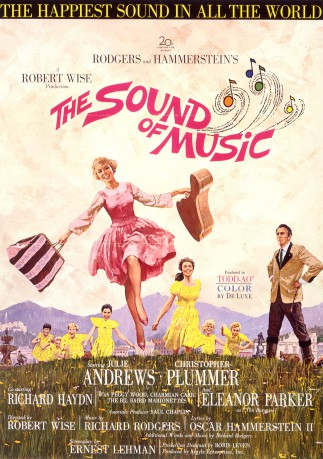

#8389 Meine Lieder, meine Träume
Alternativ: The Sound of Music
 
 IMDB-Wertung: 8.0 / 10
IMDB-Wertung: 8.0 / 10  Metascore: 0
Metascore: 0 
In 1930's Austria, a young woman named Maria is failing miserably in her attempts to become a nun. When the Navy captain Georg Von Trapp writes to the convent asking for a governess that can handle his seven mischievous children, Maria is given the job. The Captain's wife is dead, and he is often away, and runs the household as strictly as he does the ships he sails on. The children are unhappy and resentful of the governesses that their father keeps hiring, and have managed to run each of them off one by one. When Maria arrives, she is initially met with the same hostility, but her kindness, understanding, and sense of fun soon draws them to her and brings some much-needed joy into all their lives -- including the Captain's. Eventually he and Maria find themselves falling in love, even though Georg is already engaged to a Baroness and Maria is still a postulant. The romance makes them both start questioning the decisions they have made. Their personal conflicts soon become ...
Jahr: 1965
Dauer: 174 Minuten
FSK: 6
Land: USA Studio: Twentieth Century-Fox Film CorporationTonspuren: DTS - ,
Untertitel: Deutsch,
Auflösung: 1080p (1920x872) Größe: 13414 MB
Genre: Drama, Familie, Liebe, Biographie, Musical
Regisseur:  Robert Wise
Robert Wise
Drehbuch: George Hurdalek
Soundtrack: Irwin Kostal
Darsteller:
 Julie Andrews als Maria
Julie Andrews als Maria Christopher Plummer als Captain Von Trapp
Christopher Plummer als Captain Von Trapp- Eleanor Parker als The Baroness
 Richard Haydn als Max Detweiler
Richard Haydn als Max Detweiler- Peggy Wood als Mother Abbess
- Charmian Carr als Liesl
- Heather Menzies-Urich als Louisa
 Nicholas Hammond als Friedrich
Nicholas Hammond als Friedrich- Duane Chase als Kurt
- Angela Cartwright als Brigitta
- Debbie Turner als Marta
- Kym Karath als Gretl
 Anna Lee als Sister Margaretta
Anna Lee als Sister Margaretta- Portia Nelson als Sister Berthe
 Ben Wright als Herr Zeller
Ben Wright als Herr Zeller Norma Varden als Frau Schmidt
Norma Varden als Frau Schmidt Marni Nixon als Sister Sophia
Marni Nixon als Sister Sophia Doris Lloyd als Baroness Ebberfeld
Doris Lloyd als Baroness Ebberfeld Gertrude Astor als Party Guest (uncredited)
Gertrude Astor als Party Guest (uncredited) Frank Baker als Party Guest (uncredited)
Frank Baker als Party Guest (uncredited) James Gonzalez als Party Guest (uncredited)
James Gonzalez als Party Guest (uncredited) Leoda Richards als Party Guest (uncredited)
Leoda Richards als Party Guest (uncredited) Jeffrey Sayre als Party Guest (uncredited)
Jeffrey Sayre als Party Guest (uncredited) Bert Stevens als Party Guest (uncredited)
Bert Stevens als Party Guest (uncredited)- Daniel Truhitte als Rolfe
- Gilchrist Stuart als Franz
- Evadne Baker als Sister Bernice
 Alex Ball als Party Guest (uncredited)
Alex Ball als Party Guest (uncredited)- Alan Callow als Nazi (uncredited)
- Sam Harris als Party Guest (uncredited)
- Ada Beth Lee als Sister Catherine (uncredited)
- William Meader als Party Guest (uncredited)
- Bernard Sell als Party Guest (uncredited)
- Norman Stevans als Party Guest (uncredited)
- Maria Augusta Trapp als Lady in the street (uncredited)
- Doreen Tryden als Sister Agatha (uncredited)
- Maria von Trapp als Extra during 'I Have Confidence' number (uncredited)
Datei: X:\1965\Meine Lieder, meine Träume (1965, FSK6, 1920x872).mkv seit 28.02.2018
Festplatte: HD 1900-1970
 Es gibt insgesamt 25 Filme in der Gruppe '1965'
Es gibt insgesamt 25 Filme in der Gruppe '1965'